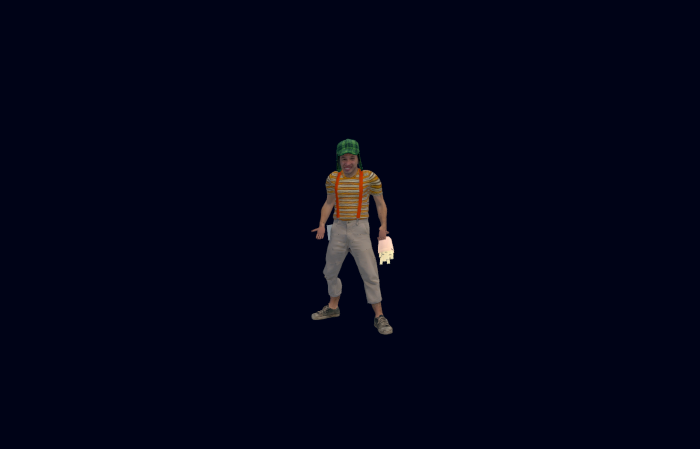
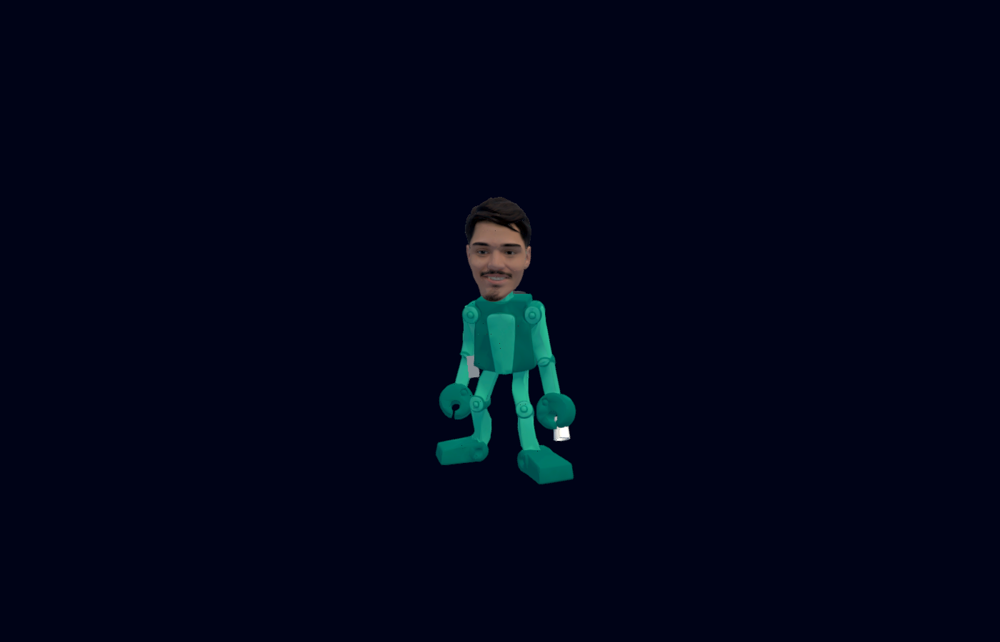

Capturas reais do executável Windows. Luiz mantém a velocidade, identidade, carro e progresso. Teste de modo zumbi confirmou quatro Lulas ativos durante a chegada gradual da primeira onda de seis, sem capturas sobrepostas. Limite de doze vivos.

